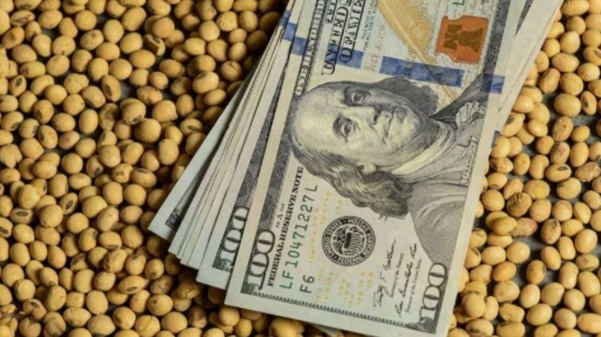

El BCRA alivió los requisitos de capital para bancos que financien al agro
El BCRA emitió la Comunicación "A" 8418. La medida facilita el acceso al crédito para el sector agropecuario y entra en vigencia a partir del día siguiente a su publicación.

El Banco Central de la República Argentina (BCRA) emitió este 9 de abril de 2026 la Comunicación "A" 8418, dirigida a todas las entidades financieras del país, con una medida que impacta directamente sobre el financiamiento del sector agropecuario. La resolución deja sin efecto la exigencia adicional de capital mínimo que regía para los bancos que otorgaban préstamos a clientes con actividad agrícola no Mipyme —es decir, productores de mayor escala que no califican como micro, pequeña o mediana empresa— que mantenían acopios de su producción superiores al 5% de su capacidad de cosecha anual. En lenguaje simple: hasta ahora, si un banco le prestaba dinero a un productor agrícola grande que tenía guardada más del 5% de su cosecha en silos o depósitos, ese banco debía inmovilizar más capital propio como respaldo de ese crédito. Esa exigencia adicional queda eliminada.
Para entender por qué esto importa, hay que explicar qué son los capitales mínimos bancarios. Los bancos están obligados por el BCRA a mantener una proporción de capital propio en relación a los créditos que otorgan, como reserva de seguridad ante eventuales impagos. Cuanto mayor es el riesgo que el regulador asigna a un tipo de préstamo, mayor es el capital que el banco debe apartar para respaldarlo. Eso tiene un costo: el capital inmovilizado no puede prestarse, lo que encarece o directamente desincentiva ciertos tipos de financiamiento. Al eliminar la exigencia adicional sobre los préstamos a productores con acopio, el BCRA está diciendo que ese riesgo ya no justifica el tratamiento diferencial, lo que libera capital bancario y facilita que los bancos ofrezcan más crédito a ese segmento del agro en mejores condiciones.
La medida tiene una lógica clara en el contexto actual. El sector agropecuario viene siendo uno de los principales motores de la recuperación económica argentina, liderando las variaciones positivas del EMAE mes tras mes y siendo una fuente clave de divisas para el Banco Central. Sin embargo, el financiamiento al campo —especialmente a los productores medianos y grandes que no califican como Mipyme— enfrenta restricciones regulatorias que encarecen el crédito o directamente limitan el acceso. Al eliminar esta sobrecarga de capital, el BCRA facilita que los bancos puedan ofrecer líneas de crédito más competitivas para capital de trabajo, compra de insumos, maquinaria o financiamiento de campaña a ese segmento del sector rural.
La Comunicación "A" 8418 es parte de una serie de ajustes regulatorios que el BCRA viene realizando en el marco de la normalización del sistema financiero argentino. En las últimas semanas, el organismo también eliminó la sobretasa de encajes bancarios y avanzó en la flexibilización cambiaria, en una tendencia clara hacia reducir las fricciones regulatorias que históricamente complicaron el funcionamiento del sistema de crédito en el país. Para el campo, que necesita financiamiento fluido para sostener su producción y exportaciones, cada mejora en las condiciones de acceso al crédito bancario es un paso concreto hacia mayor competitividad y menor dependencia de fuentes de financiamiento informales o más costosas.